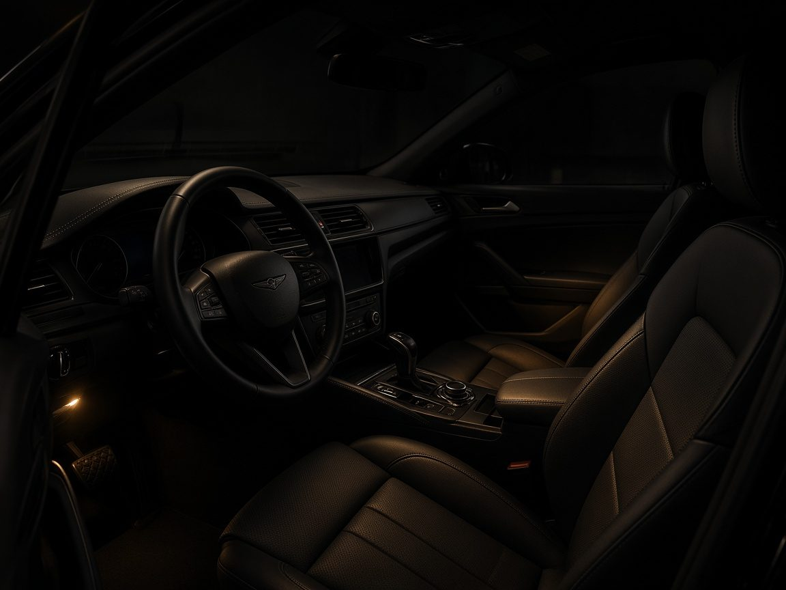

자살차량 특수청소
카리셋 자살차량 특수청소 사례입니다. 현장 확인 후 일반 견인이 어려워 자살차량 견인으로 작업장까지 이동했습니다.
시트 폼, 바닥 매트, 트림 안쪽, 공조 라인까지 오염이 스며 있어 표면 세차만으로는 냄새가 남는 상태였습니다. 분해가 필요한 부위를 확인한 뒤 약품 세척, 오존 탈취, 공조라인 세척을 순서대로 진행했습니다.
작업 후 상태 확인을 거쳐 차량을 인도했습니다. 유가족 성함, 얼굴, 차량번호는 공개하지 않으며 작업 사진도 개인이 특정되지 않는 범위만 남깁니다.
- 차량 상태
- 중형 세단. 일반 견인이 거부된 오염 차량으로, 실내 탑승이 어려운 상태였습니다.
- 오염 범위
- 시트·바닥·트림·송풍구. 공조를 켜면 냄새가 다시 올라오는 구간까지 확인했습니다.
- 작업 과정
- 현장 확인 → 견인 이동 → 내장재 분해 점검 → 오염 제거 → 오존 탈취 → 인도 전 확인
- 사용 장비
- 방호 장비, 특수 세정 약품, 오존 탈취기, 공조라인 세척 장비
- 작업 결과
- 실내 오염과 악취를 처리한 뒤 인도했습니다. 이후 보관·폐차 말소가 필요하면 이어서 안내합니다.
- 개인정보 보호
- 성함·얼굴·차량번호는 올리지 않습니다. 지역·차종·작업 내용만 공개합니다.
- 현장 출동 및 자살차량 견인
- 실내 특수청소 · 차량 악취제거
- 작업 후 인도